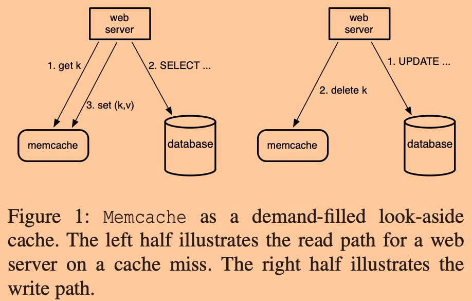

本文是我阅读这篇论文过程中的笔记，以及自己的思考。
这篇文章并没有提出什么新概念，而是主要讲述的是Facebook如何通过开源的memcache系统来构架他们的集群以此来支撑全球最大社交网络公司的巨大用户请求。
简介
一般来说系统最初的架构为单机架构，代码和数据库处于同一台机器上。随着用户量的增加，这种单机系统最先出现的瓶颈一般是业务代码层，此时可以通过将数据库和代码分离到不同机器，并且通过不断增加代码服务器的数量来提升整体系统的性能。
但是如果用户量继续增长的话，数据库将会逐渐变为新的瓶颈。这时，一般会将数据进行分片存储，这样理想上能够让数据库所能支持的请求数与分片数正比增长。
假设用户数还在不断增长，由于数据库是不能无限制细分下去的，当分片到一定程度，请求的网络通信将耗费大量时间。
Facebook就面临着这样的问题，所以他们在前端服务器（业务逻辑代码层）和数据库层之间增加了一层缓存。由于缓存的访问速率一般能够比数据库高至少一个数量级，所以假设缓存的命中率能够有99%，那么在相同的配置之下，整个系统就能处理之前100倍的负载。也正是因为这种超额服务，使得系统设计者必须谨慎保证缓存系统的可用性和命中率，不然缓存系统失效造成的数据库请求会瞬间超出数据库系统能力范围。
Facebook选用的是开源的memcache，其只提供了简单的单机内存哈希表实现，并只提供了基本的set、get、delete接口，并没有提供容错、一致性等等的保证，故直接使用肯定是不行的，Facebook通过一系列的改进和组织，使其能够支持这个世界上最大的社交公司的负载。
背景知识
根据Facebook的观察发现，用户消费的数据比他们创造的数据高一个数量级，这个特征使得读请求占据了大部分的负载。
另外Facebook的开发人员认为，对于一部分用户暴露一定的过期数据（几秒内）是可以接收的，但是绝对不能容许用户读到过期几个小时甚至几天的严重过期数据。
文章中采用memcached来表示一个运行的缓存实例，而用memcache来表示缓存集群。
Facebook采用的是demand-filled look-aside方式的缓存，具体的机制如下图所示。

左图展示的是读请求的流程：
- web服务器先向缓存中读取数据，如果miss，则
- 去数据库中进行查找，在得到数据后，再
- 将得到的数据设置回缓存中，以避免后的相同的读请求再去打扰数据库。
而右图展示的是修改请求的流程：
- web服务器先向数据库发起更新请求，等更新成功返回后
- 删除缓存中相应数据。
为什么读操作不能让缓存服务器来代用户发起db查询呢？
如果真的这样实现，那么缓存服务器的任务就会不那么纯粹，需要和web服务器还有数据库之间建立耦合，会增加一定的实现上的复杂度，且对于缓存服务器的部署和维护都增加了额外工作。
且因为缓存服务器的工作变多，资源争用会让缓存服务器的性能相对下降。
为什么写操作不将新获取到的值顺便设置回缓存，而是选择删除对应数据呢？这样不就导致未来的一次数据库查询操作吗？
没错，正常情况下，顺便直接将值写回缓存确实能够一定程度上增加缓存命中率。而之所以没有这样实现，可能是处于以下考虑，假设写操作使用set写回缓存：
- 在读写请求高并发执行情况下，读请求和写请求之间的set，或者写请求之间的set，都可能会乱序到达，可能会导致过期数据反而覆盖了更新的数据。这增加了用户读到严重过期数据的可能性。为了解决这个问题，还需要在set的基础上提供并发控制，这无疑会影响性能和增加实现复杂度。
而使用delete的话，则至少可以避免并发写请求之间的delete乱序到达的问题，因为delete操作是幂等的。但是读请求和写请求之间，确实，也还是存在因为：更新的写操作的delete请求先到达，而持有过期数据的读请求的set操作后到达，而导致用户可能读到严重过期数据。这个问题的解决会在下文中讲解。
整体架构

上图是最终Facebook的整体系统架构。
整个系统分布于若干个数据中心（他们称之为Region）中，每个Region中包含若干个前端集群，而每个前端集群中包含若干个web服务器和缓存服务器。Region内的前端集群会共享一个存储集群，一个存储集群中包含着全量的系统数据。其中一个Region会是master，其他的为slave，所有的写请求都要发到master中，而slave中的存储集群只能处理读请求，master和slave之间的存储服务器会进行数据同步。
为什么要在一个Region中建立多个前端集群，而不是直接将所有的web服务器和缓存服务器放到同一个集群中？
- 如果只有一个集群，那么那些存储热点数据的缓存服务器将可能会不堪重负。通过构架多个集群，能够让多台缓存服务器同时提供热点数据，这样间接的提高了系统的处理能力。
- 如果只有一个集群，那么一个web服务器就可以和所有的缓存服务器通信，这会导致大量的TCP连接，这不仅消耗了大量的资源，而且还会导致更多的请求数据包，这可能会导致网络拥塞。
- 构建一个包含适量机器的网络会让网络设备速度更快，效率更高。
单个前端集群内的优化
一个前端集群中会包含几千个服务器，其中包含几百个缓存服务器，数据请求会通过一致性哈希来被分配到相应的缓存服务器。
在这种集群规模下，主要的关注点在于降低获取数据的延迟和增加缓存命中率。
降低延迟
用户的单个web请求通常会导致几百个单独的memcache get请求。根据Facebook的观察，一个热门的页面平均会导致从memcache中读取521个不同数据。
这种大规模扇出（fan-out）可能会导致incast congestion（网络拥塞），或者让某个缓存服务器成为所有web服务器的性能瓶颈。这种问题通常可以通过数据复制缓解（replication）。
memcache的客户端的职责有数据序列化、压缩、请求路由、错误处理和请求打包发送，其维护了所有的有效服务器的信息。为了提供高性能缓存服务，Facebook的开发人员先对于memcache的客户端进行了一系列优化：
- 请求打包：为了降低网络请求次数。客户端会构建一个代表数据依赖关系的有向无环图，通过分析来让web服务器的每个请求包含尽可能多的数据。根据他们的观察，平均来说，打包后的请求平均包括24个key。
- 客户端-服务端交互：
- 客户端采用UDP来处理
get请求，他们的UDP实现能够检测被丢弃的以及乱序到达的数据包（通过sequence number）。当检测到上述情况发生时，会直接错误返回，而不尝试进行恢复。而客户端逻辑则会将这些错误视作类似cache miss，进而从数据库中获取数据，但是不同的是为了不给可能已经高负荷的网络环境或者缓存服务器增加负担，此时客户端不会继续进行缓存的数据更新。 - 基于可靠性考虑，客户端使用本机
mcrouter实例用TCP来实现set和delete操作。通过mcrouter的类似连接合并的技术，能够避免因为大量TCP连接的分配所造成的不必要资源消耗。
- 客户端采用UDP来处理
- Incast congestion：memcache客户端提供了流量控制以及拥塞控制机制。和TCP协议类似，使用滑动窗口协议来实现流量控制，使用慢开始算法进行拥塞控制。但是和TCP协议不同的是，这里的窗口并不仅仅限制一条TCP连接，而是对所有到同一个目的地的请求均采用同一个窗口进行限制。
下图是窗口大小和web请求平均等待时间之间的关系。

可以看到太小的窗口会导致请求堆积，增加延迟，而太大的窗口则会导致网络拥塞，进而也导致延迟增加。所以需要寻找一个中间的平衡点。
降低负载
论文中介绍了三种结束来降低负责。
Lease
Facebook的开发人员使用leases解决了两个问题：
- stale set
- thundering herds
对于stale set，就是之前提到的并发读写时的问题，下面一个可能导致该问题的样例，假设k初始值为0：
1 | C1: read k from cache, miss |
可以发现C1将过期的数据设置到了缓存中。
而thundering herds指的是一个热点数据被修改时，因为会将这些数据被从缓存中剔除，而这会导致大量的读请求miss，进而让数据库请求瞬间增高，并且更浪费的是，这些激增的数据库请求都是查询同一个数据，这无疑浪费了很多计算资源。
为了解决stale set，当一个客户端遇到cache miss的时候，memcached实例会赋予该客户端一个lease在未来set缓存数据的时候用来作为凭证。lease为一个和某个key所绑定的64位token。当该memcached实例收到对于某个key的delete请求时，会顺道将和该key相关的所有lease清除，以此来避免stale set。同样的场景，新的机制，下面是伪代码：
1 | C1: read k from cache |
为了解决thundering herds，只需要在上面的lease机制上拓展一点点即可：要求限制memcached实例为每个key返回lease的评率。Facebook的开发者设置为10秒。如果生成lease后的10秒内，有请求相同数据的读请求miss了，那么memcached会返回要求客户端等待一小段时间后再重试，而不是直接去打扰数据库，这样就保证只有一个客户端会真正向数据库发起查询请求。当然如果该客户端在拿到lease后宕机了，那么10秒钟后对应的lease会自动过期并分配给下一个访问该key的客户端。
根据Facebook工程师的测试显示，lease机制能够让数据库查询速率峰值从17K/s降低到1.3K/s。
特别的，对于那些可以容忍略微过期数据的功能，可以进一步减少这些请求的延迟：当一个key被删除之后，它的值会被转移到一个专门用来存储被删除数据的数据结构中（回收站），存储在该数据接口中的数据只有很短的存活时间。
这样当一个客户端发生了cache miss且对应的key的lease已经在10秒内被分配过了，那么memcached会尝试从“回收站”中读取该数据，如果命中了，那么标记该数据为过期数据并返回。这样当客户端可以按需选择继续等待重试或者不再等待直接采用过期数据。
Memcache pools
memcache的定位是一个不同应用之间共享的通用缓存层。但是因为不同的应用有着不用的访问模式，不同的内存占用以及对服务质量的不同要求。这些不同应用的负载多样性会对缓存造成负面影响，降低命中率。
为了适应这些多样的需求，Facebook的工程师们将memcache集群划分为几中不同的pool：
- 一个默认的pool，称为wildcard。
- 一个小容量的pool，用来存储频繁使用，但是cache miss后代价并不高的数据。
- 一个大容量的pool，用来存储不频繁使用，且cache miss后代价昂贵的数据。
- 等等
Replication Within Pools
在一些pool内，Facebook的工程师们还会通过replication来优化部分数据的访问延迟。选择进行replication的key的标准为：
- 应用经常大量同时访问很多的key。
- 整个数据集能够被一个或者两个memcached所存储。
- 对这些key的访问速率超过了单台服务器可以支持的速率。
之所以选择replication而不是继续分片存储是因为以下原因：
考虑一个存储100个数据项的memcached实例，最大能够支持500K/s的请求速率。因为一个包含100个key的读请求和一个只包含1个key的读请求，所消耗的时间差距并不大。为了将系统性能扩展到1M/s的请求处理速率，假设我们仅仅是增加一个分片服务器的话，那么一个包含100个key的请求会变为两个同时向两台缓存服务器中发出的各包含大约50个key的请求，那么整个系统的处理速率还是500K/s。如果是采用replication将100个数据项复制一份存储到一台新机器的话，那么两台缓存服务器可以同时服务两批客户端，这样系统的真实处理速率才到了1M/s。
当然replication机制，为了保证一致性需要让所有的修改请求都要发给所有的replica。
失效处理
正如之前说到的，因为缓存层的存在，使得整个系统能够处理远超数据库层所能承受的请求，那么如果缓存层发生了节点失效，就可能让数据库暴露在大量的请求压力之下。
Facebook的工程师总结并处理了两个维度的失效问题：
- 因为网络或者服务器失效导致少量的缓存服务器无法被访问。
- 一个大规模的类似停电的事件导致集群内大量服务器失效。
对于大规模失效，Facebook工程师会直接将用户的请求路由到其他的前端集群中，以此保证可用性。
对于小规模失效，Facebook内部有自动修复系统会进行自动修复。但是整个修复的过程可能需要几分钟。虽然只有几分钟，但是已经足够让数据库因为激增的请求而奔溃。
所以Facebook的工程师设置了一小批称为“Gutter”的机器。当一个客户端的请求超时时，它会先去请求一个Gutter pool，如果miss了，客户端才会请求数据库，并在读取之后将值更新入Gutter pool，这样就能够减少一部分的数据库负载。
因为Gutter是被大量缓存服务器所共享的，为了让Gutter中的数据能够尽可能的反应最新的数据，如果要求在数据更新时也对所有的Gutter发送delete，会导致大量的请求，且这些请求中的大部分都是无效的。所以Facebook的工程师选择让Gutter中的数据自动很快过期，通过暴露可能的轻微过期数据来避免大量网络请求。
为什么不简单的直接将这些失效请求导向那些还存活的缓存服务器呢？
因为如果之前的缓存服务器是因为不堪重负而奔溃的话，那么将这些请求导向其他服务器，也很可能会导致其他服务器奔溃，因为根据观察，部分热点数据能够占用了一个服务器20%的负载，将这些热点数据转移到其他服务器有潜在风险。
所以Facebook工程师选择将这些数据导向一些空闲的缓存服务器，即Gutteer，这样能够减造成低级联错误的风险。
单个Region内的优化
正如前面介绍的，每个Region中有多个前端集群。
Regional Invalidations
每个前端集群内的缓存集群都独自工作，这意味着数据库中的数据可能在多个集群中存在副本，所以当数据库中的数据被修改后，数据库应该对数据一致性负责。
为了保证所有缓存副本中的数据体现最新版本，Facebook的工程师为每一个数据库实例部署了一个守护进程mcsqueal，该守护进程会监控在MySQL，在MySQL写入commit log时，会提取出该事务中涉及到的key，并向region中的所有缓存服务器广播delete请求。
我们记得之前也要求客户端发送delete请求，在这两种机制的保证下，能够最大可能的降低缓存服务器中的过期数据存活时间。
但是，一方面从数据库层广播的delete请求量实在太大，而且这些广播请求都是跨集群的消息；另一方面因为有些数据库修改的数据并不存在于缓存服务器上，根据Facebook工程师的观察，从数据库层广播出去的delete请求中只有4%真正的删除了缓存数据。
所以为了降低delete广播请求数据包数量，Facebook的工程师们为每个前端集群设置了几个专用的服务器来跑mcrouter实例。数据库会直接将delete请求打包发送给这些mcrouter实例，而mcrouter会负责挑选出一个个有用的delete请求路由到其所在集群内正确的缓存服务器。
Regional Pools
如果用户的请求是随机的路由到任意一个前端集群，那么理论上各个集群内的缓存服务器的数据大体都是相同的。这使得维护人员，能够在不影响缓存命中率的情况下，下线某个前端集群。
虽然前面介绍了replication的优点，但是过度的replication会导致内存利用率降低，所以对于有些数据，可以不进行replication，所以Facebook工程师在一个Region内设置了一个所有前端集群共享的pool，称为regional pool。需要注意的是，对于访问regional pool而超时的请求，也会使用Gutter来处理。
经过观察，Facebook的工程师决定将低访问频率的、数据量小的、访问用户量小的数据存放在regional pool中，因为他们占用更少的带宽，更具性价比。
集群冷启动
当启动一个新的前端集群时，因为缓存中没有任何数据，所以缓存的命中率会在一段时间内接近0%，如果不做处理，那么对数据库的请求会激增。
为了解决这个问题，Facebook的工程师要求在客户端访问“冷集群”miss后，不去访问数据库，而是转而向其他“暖集群”中读取，在成功读取后，客户端也会将数据放入“冷集群”。这样“冷集群”就能在不影响缓存命中率的情况下，很快变暖。
因为之前介绍的lease机制只能保证同一个集群内的一致性，像这种从一个集群读然后set回自己集群的操作，如果仅有以上机制的话，可能会导致不一致发生。比如：“冷集群”中一个客户端执行了一个更新操作，而在更新操作的delete到达缓存服务器之后，可能有客户端才将从其他集群中读到的过期数据set回了缓存服务器。
为了解决这个问题，Facebook的工程师要求，在冷集群内的缓存服务器执行完一个delete操作之后的两秒内拒绝执行相同key的set操作。并且他们要求，当一个客户端试图set冷集群缓存服务器的操作被拒绝时，重新从数据库获取最新数据。
以上机制，会在冷集群的命中率足够高且稳定后，被关闭。
Region之间的优化
整个系统是由一个master region和其他slave region组成的，通过在地理上设置多个region能够让用户就近访问服务器显著降低延迟并提高容错性。
但是因为这种数据库的主从复制模式带来的延迟带来了一致性的问题。
考虑一个slave region中的客户端进行了更新操作，然后在操作成功后，delele其所在集群的缓存数据，但是这种操作是不安全的，因为在主从region延迟很大时，很可能slave region在执行完delete后同步过来了过期数据，这样该region内的客户端可能会读到过期数据。所以这也是为什么Facebook的工程师又设计了mcsequeal机制保证数据的一致性。
另外如果一个slave region中的客户端进行了更新操作之后马上进行读请求，如果没有任何措施，那么他很可能会发现读到过期的数据，自己的修改丢失了，这是非常影响用户体验的。所以为了尽可能保证同一个region内的客户端的请求的FIFO，Facebook的工程师要求在slave region客户端发起一个更新操作的时候，先在regional pool中设置一个remote marker标志着有一个当前region有一个更新操作正在执行还未结束，而当更新操作在从master region同步到该客户端所在的region时，数据库会发出请求删除该marker。当一个对相同数据的读请求发生时，如果出现cache miss，先去检查对应数据是否被标记了remote marker，如果是，那么去master region查询最新值，如果没有，则去查询本region数据库。
如果有并发更新操作发生，不是可能导致先前的更新操作的delete删除了最新更新操作的marker吗？
Facebook工程师在实践中表示这种情况并不常见，但是理论上是存在的。
单机缓存服务器优化
自适应slab分配器
Memcached使用slab class来组织内存，每个slab class都包含一些预分配的固定大小的内存块。Memcached会使用最优大小分配原则（best fit）来选用存储数据用的slab。
每个slab class的初始大小为64字节，并且可以以系数1.07进行指数增长，1MB为大小上限，且需要4字节对齐。当服务器中没有空闲内存可以分配的时候，Memcached会采用LRU策略来进行数据驱逐（eviction）。
Facebook工程师发生原先的内存分配器在负载变化时会影响缓存命中率。所以他们设计了一款能够自适应的分配器，能够周期性的在所有slab之间进行负载平衡。该分配器会在slab正在进行数据驱逐时进行检测，如果下一个要被驱逐的数据是上次使用时间高于所有其他slab中的最近最少使用的数据上次使用时间平均值的20%，那么该分配器会将该slab标记为需要更多的内存。标记完之后，该分配器会将持有全局最近最少使用数据项的slab的内存回收并分配给被标记的slab。
开源实现中的分配器主要侧重于平衡各个slab class的数据驱逐率，而Facebook工程师的实现主要侧重平衡所有的slab class中数据项的上次使用时间。
The Transient Item Cache
Memcached支持为缓存的数据设置过期时间，并会惰性清理，只有当一个数据项到达LRU的末尾时，才会进行过期检查。但是对于那些非常“短命”的数据，这种惰性策略下会让内存很快被消耗完。
为了解决这个问题，Facebook的工程师选择对大多数的key采用惰性清理策略，而去主动清理一些“短命”的key。他们将这些短命的数据放入一个环形的缓冲区中存储，称为Transient Item Cache。该缓冲区的head会每一秒向后移动一级，然后head所指向的所有数据项会被清理，所以如果要存储一个过期时间为5秒的数据，只要将其放置到距离当前head长度为5的位置即可。